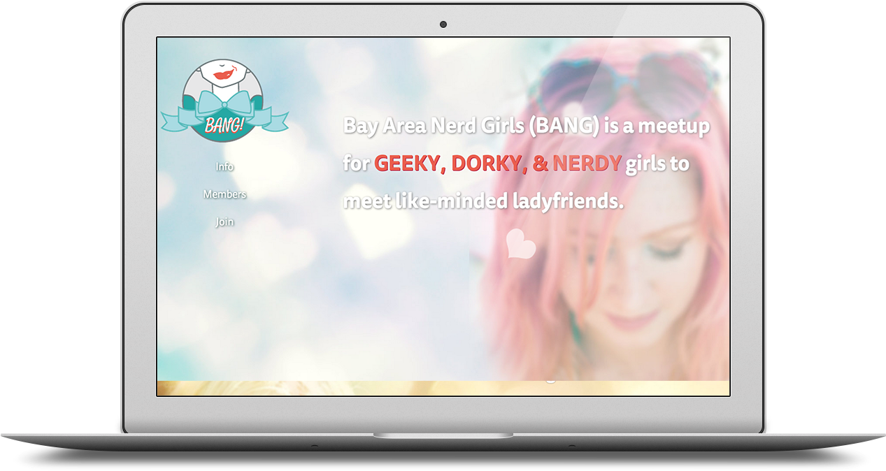
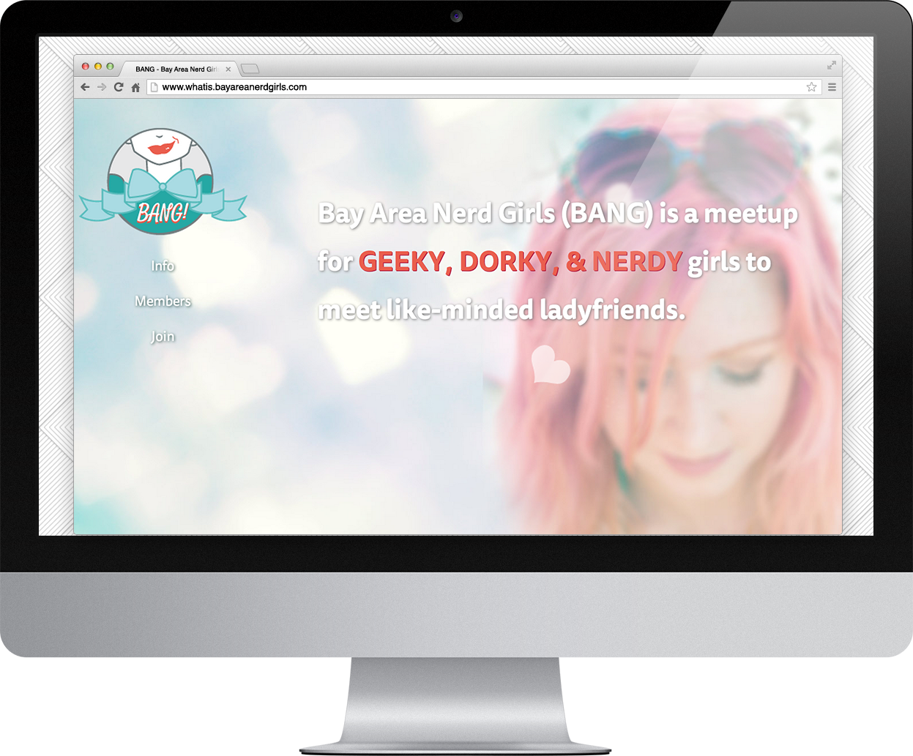
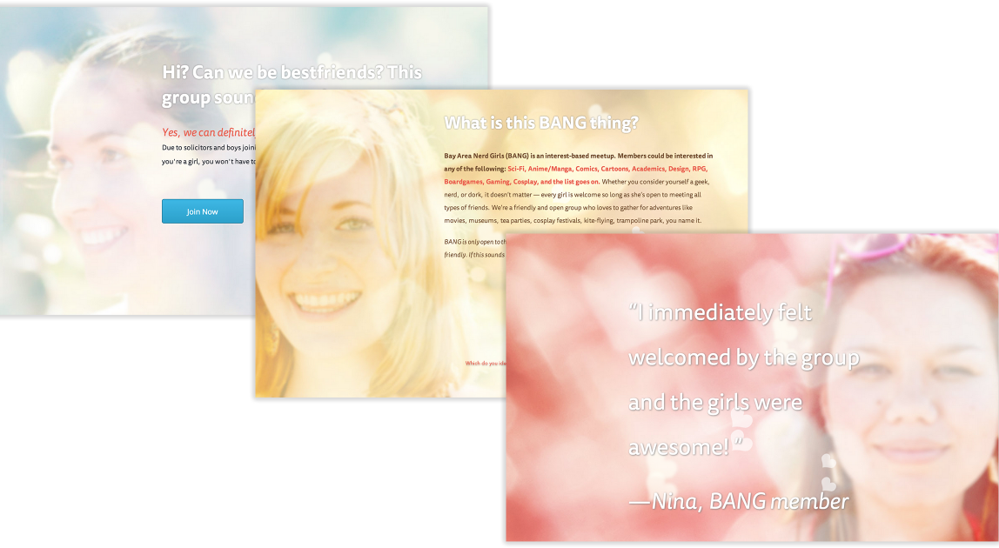

BitTorrent’s corporate website showcasing different products like BitTorrent downloader client, uTorrent client, BitTorrent Sync, & BitTorrent Bundles. Visual assets created for the website like infographics and nav styling.



Example Persona

Paige is a dorky young adult freshly moved to the Bay Area looking to find new friends. She’s currently working a retail job 30 hours a week and shares a home with three roommates in the Sunset District. She attends classes at CCSF in her spare time, still trying to find her passion professionally.She talks to her close friends back in her hometown frequently via chat clients and her only physical friend in SF is her boyfriend.
Background
High School graduate, some college, completed or in process to getting a degree.Behavior
Media hungry, avid fangirl, frequents social media sites like reddit, pinterest, and tumblr.Motivation
To find friends because of moving to a new city or in search of better friends. Frustrations: InfrequencyWireframe